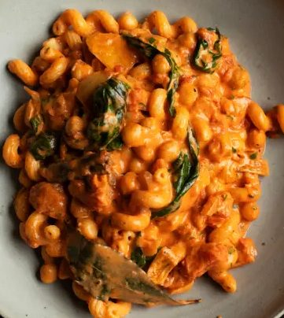

Chickpeas and Macaroni

Ingredients
Method
- Peel and roughly chop the 1 medium onion, then soften it in a pan with the 3 garlic cloves and 2 tbsp olive oil. When the onions start to brown, add the 1 tbsp tomato purée, 400g tinned tomatoes, ½ cinnamon stick, 3 bay leaves, ½ tsp chilli flakes and pepper and salt. Simmer for 15 minutes.
- Bring a deep pan of water to the boil, salt it, then cook the 100g macaroni for 9 minutes, until tender. Drain the macaroni. Drain the 400g chickpeas and stir both into the tomato sauce. Simmer for 5 minutes, then stir in the 100ml double cream.
- Add the 2 tbsp chopped parsley and the 12 basil leaves. Divide the pasta and chickpeas between two deep bowls and serve.